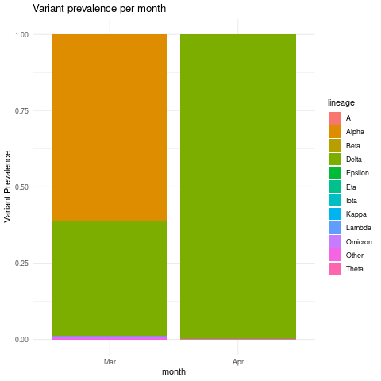
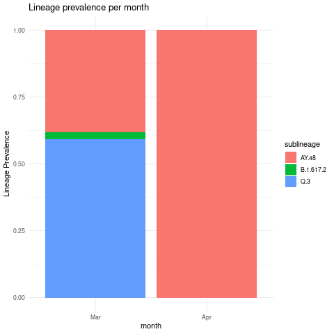
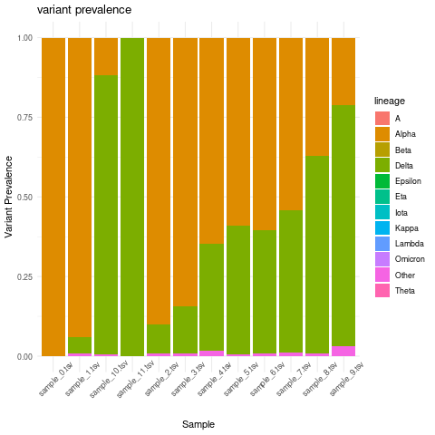
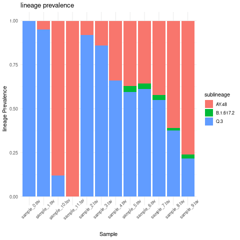
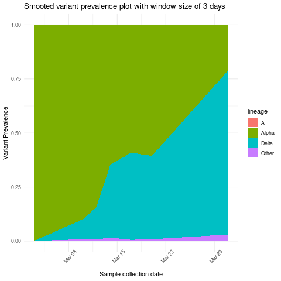

Demix output manipulation and plotting using R
Here we discuss freyja demix output manipulation and plotting using R programming
language.
Change freyja
demixoutput to a dataframe format.
library(data.table)
library(tidyverse)
library(lubridate)
library(runner)
# Code credit for parsing the demix output: https://github.com/a-roguet
results<-read.table("test_sweep.tsv", fill = TRUE, sep = "\t", h=T)
results<-as.data.frame(sapply(results, function(x) str_replace_all(x, "[',()\\]\\[]", ""))) # Removed the unwanted character: [], () and commas
results<-as.data.frame(sapply(results, function(x) trimws(gsub("\\s+", " ", x)))) # Removed double spaces
# Summarized data
summarized<-as.data.frame(setDT(tstrsplit(as.character(results$summarized), " ", fixed=TRUE))[]) # Extract Summarized data
summarized$sample<-results$X
for(i in 1:((ncol(summarized)-1)/2)){
if(i==1){
summarized.final<-summarized[,c(ncol(summarized),1:2)]
} else {
start=i*2-1; end=i*2
summarized.final<-rbind(summarized.final, setNames(summarized[,c(ncol(summarized), start:end)], names(summarized.final)))
}
}
summarized.final<-summarized.final[complete.cases(summarized.final), ]
names(summarized.final)<-c("Sample", "lineage", "abundance")
# Sublineages data
for(i in 1:nrow(results)){
lineages.temp<-as.data.frame(t(setDT(tstrsplit(as.character(results[i, 3]), " ", fixed=TRUE))[]))
abundances.temp<-as.data.frame(t(setDT(tstrsplit(as.character(results[i, 4]), " ", fixed=TRUE))[]))
sample.temp<-rep(results[i, 1], nrow(lineages.temp))
if(i==1){
sublineages.final<-cbind(sample.temp, lineages.temp, abundances.temp)
} else {
sublineages.final<-rbind(sublineages.final, cbind(sample.temp, lineages.temp, abundances.temp))
}
}
names(sublineages.final)<-c("Sample", "sublineage", "abundance")
Read in time metadata information and merge it with abundance dataframe
time_metadata <- fread("sweep_metadata.csv")
combined_lineage_abundance_time_data <- time_metadata %>%
inner_join(summarized.final, by = "Sample")
combined_sublineage_abundance_time_data <- time_metadata %>%
inner_join(sublineages.final, by = "Sample")
Optional: you can also add custom lineage grouping as following:
# get rows with sub-lineage value starting with "AY"
sublin_grouping <- combined_sublineage_abundance_time_data %>%
filter(str_detect(sublineage, "^AY"))
# Add a grouping column
sublin_grouping$grouping <- "AY.X"
# get rows with sub-lineage value not starting with "AY"
other_sublineages <-combined_sublineage_abundance_time_data %>%
filter(!str_detect(sublineage, "^AY"))
# Add a grouping column
other_sublineages$grouping <-"other"
# Merge the two dataframes
grouped_sublineage_data <- rbind(sublin_grouping,other_sublineages)
Create Variant prevalence stacked bar plots grouped by month intervals
combined_lineage_abundance_time_data %>%
mutate(month = as.factor(month(mdy(sample_collection_datetime),abbr=TRUE,label = TRUE)))%>%
mutate(abundance = as.numeric(abundance))%>%
group_by(lineage,month)%>%
summarise(mean_monthly_abundance = mean(abundance)) %>%
ggplot(grouped_interval_lineage,
mapping = aes(fill= lineage, y=mean_monthly_abundance, x=month)) +
geom_bar(position="fill", stat="identity") +
theme_minimal() +ylab("Variant Prevalence") +
ggtitle("Variant prevalence per month")

Create lineage prevalence stacked bar plots grouped by month interval
combined_sublineage_abundance_time_data %>%
mutate(month = as.factor(month(mdy(sample_collection_datetime),abbr=TRUE,label = TRUE)))%>%
mutate(month = as.factor(month)) %>%
mutate(abundance = as.numeric(abundance))%>%
filter(abundance >0.01)%>%
group_by(sublineage,month)%>%
summarise(mean_monthly_abundance = mean(abundance))%>%
ggplot(grouped_interval_sublineage,
mapping = aes(fill=sublineage, y=mean_monthly_abundance, x=month)) +
geom_bar(position="fill", stat="identity") +
theme_minimal() +ylab("Variant Prevalence") +
ggtitle("Lineage prevalence per month")

Create variant prevalence per sample stacked bar plot
combined_lineage_abundance_time_data %>%
mutate(abundance = as.numeric(abundance))%>%
group_by(lineage, Sample)%>%
summarise(mean_sample_abundance = mean(abundance)) %>%
ggplot(grouped_interval_lineage,
mapping = aes(fill= lineage, y=mean_sample_abundance, x=Sample)) +
geom_bar(position="fill", stat="identity") +
theme_minimal() +ylab("Variant Prevalence") +
ggtitle("variant prevalence") + theme(axis.text.x = element_text(angle = 45))

Create lineage prevalence per sample stacked bar plot
combined_sublineage_abundance_time_data %>%
mutate(abundance = as.numeric(abundance))%>%
filter(abundance >0.01)%>%
group_by(sublineage,Sample)%>%
summarise(mean_sample_abundance = mean(abundance))%>%
ggplot(grouped_interval_sublineage,
mapping = aes(fill=sublineage, y=mean_sample_abundance, x=Sample)) +
geom_bar(position="fill", stat="identity") +
theme_minimal() +ylab("lineage Prevalence") +
ggtitle("lineage prevalence")+ theme(axis.text.x = element_text(angle = 45))

Create stacked area plot showing variant prevalence based on moving average of three days
combined_lineage_abundance_time_data %>%
mutate(sample_collection_datetime = mdy(sample_collection_datetime)) %>%
mutate(abundance = as.numeric(abundance))%>%
group_by(lineage) %>% arrange(sample_collection_datetime) %>%
mutate(mov_avg_abun = mean_run(abundance, k = 3, lag = 1, idx = as.Date(sample_collection_datetime))) %>%
ggplot(aes(x=sample_collection_datetime,y=mov_avg_abun,group=lineage,fill=lineage)) +
geom_area(position="fill")+ theme_minimal() +ylab("Variant Prevalence")+
xlab("Sample collection date")+ ggtitle("Smooted variant prevalence plot with window size of 3 days") +
theme(axis.text.x = element_text(angle = 45))
